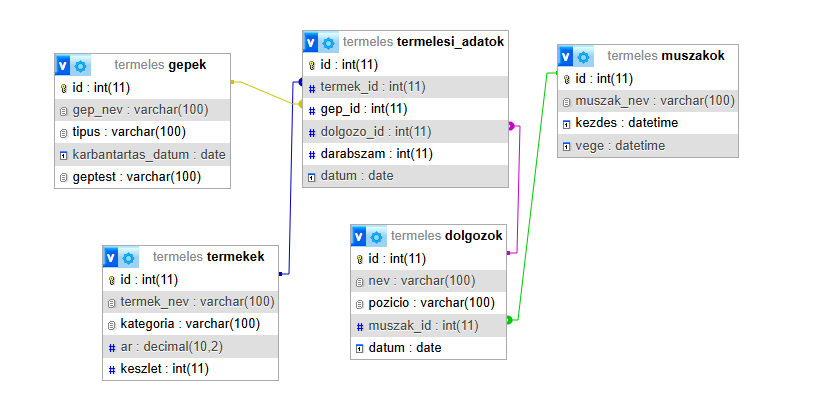

-19 éves vagyok, és a Bánkiban tanulok, immáron 5. éve.
-Számos megpróbáltatáson vagyok túl az iskola által, mióta idejárok, hiszen 9. elején kiderült, hogy 2 évig gépészeti alapképzést kapunk, majd ágazati vizsgát kellett tennem, ami egyáltalán nem informatikai vizsga volt, így már az elején kedvemet szegte.
-Mikor végre megvolt a vizsga, 11.-ben szintén nem volt olyan óra, ami érdekelt volna, hiszen hiába érdekes az elektronika, nem amiatt jelentkeztem ide.
-12.-től szerencsére elkezdtünk olyan tantárgyakkal is foglalkozni, melyek számomra érdekesek, de mivel 3 év eltelt úgy, hogy nem azt tanultam, ami miatt jelentkeztem, így kevés kedvem maradt bármihez is, ami szakmai tárgy.
-Úgy gondolom, hogy többet fejlődhettem volna, ha másképpen osztják el az óráinkat, de mégis elégedett vagyok, hiszen így is minden egyes hétköznap beültem az iskolapadba, és próbáltam legalább közepesen teljesíteni.
-Több gyakorlat érdekesebbé tette volna a diákéveket, de sajnos csak a Hankookban volt lehetőségünk betekinteni, és sajnos eszközt sem biztosított eleget az iskola.
-alapképleteket tanultunk
-jegyzőkönyvet készítettünk papíron és digitálisan is
-hasznosnak gondolom, hiszen demonstrálta, hogy milyen rejtett logikai elemeket tartalmaznak az áramkörök, illetve veszélyeket
-segített megéretni a szoftver és a hardver kapcsolatát
-fejlődtem a kód írásában és a hibák keresésében
-a Tinkercad hasznomra vált, mert nemcsak kódot írtam, hanem láttam is szimulálva, hogy hogyan állok
-a tolatóradaromat is abban a környezetben valósítottam meg
-az órákon a Python programozási nyelvvel foglalkoztunk
-megtanultunk pl.: kő-papír-olló játékot programozni
-az órák során játékosan tanultam meg a nulláról az alapokat
-jegyzőkönyvet készítettünk
-megtanultam a bináris számrendszerben való számolást
-megismerkedtem az alapvető logikai kapukkal: AND, OR, NOT, NAND, NOR
digitális áramkörök használata mindennapi eszközökben: számítógépek, telefonok, autók, háztartási gépek, stb.
relációs modell: Az adatokat táblázatok (relációk) formájában tároljuk, ahol a sorok (rekordok) és oszlopok (mezők) reprezentálják az adatokat
megtanultam az plapvető műveleteket: SELECT, INSERT, UPDATE, DELETE
foglalkoztam a JOIN műveletekkel: Az adatbázisokban több táblát kapcsolhatunk össze (INNER JOIN, LEFT JOIN, RIGHT JOIN)
rájöttem,hogy az adatbázisok alkalmazása fontos: Nagy adatmennyiség kezelésére, gyors keresésre, rugalmas struktúrájú adatok tárolására
a Hankookban nyárigyakorlat során tapasztaltam, hogy egy jó adatbázis mennyire megkönnyíti a munkafolyamatokat
-az órákon sok elméletet tanultunk, hogy eljussunk addig, hogy Cisco Packter Tracerben dolgozzunk
-hálózati típusokkal foglalkoztam: Lokális hálózatok (LAN), széles körű hálózatok (WAN), városi hálózatok (MAN), személyi hálózatok (PAN)
-megtanultam az IP címzést és az Alhálózati maszkok osztását
-a tantárgy segített abban, hogy lássam mennyire fontosak a hálózatok, főleg a jövő szempontjából
-megértettem a programozás logikai alapjait.A PLC programozás során sikerült átlátnom a logikai műveletek fontosságát és azok helyes alkalmazását az automatizálásban
-gyakoroltam az időzítő és számláló blokkok használatát
-a gyakorlati tapasztalatok segítettek a fejlődésben,de sajnos kevés alkalmam nyílt rá, hiszen nem volt hozzá eszköz
-munkásságom során egy autós riasztórendszert programoztam be

-az órákon leginkább EasyEdában dolgoztam
-nagyban alapozott az elektronikai tudásra
-egy tapskapcsolót valósítottunk meg
-a számítógépes szimuláció olyan folyamat, amely egy valós rendszer működését modellezi számítógép segítségével, lehetővé téve annak vizsgálatát és elemzését anélkül, hogy közvetlenül beavatkoznánk a valós rendszerbe
-az órák nagyrészében kitértünk arra, hogyan kell jól önéletrajzot írni, majd megvalósítottuk angolul is
-több új szavat és kifejezést is tanultunk a munkavilágával kapcsolatban
-számos fiktív munkahelyi esetről és megoldásáról beszéltünk és olbvastunk
-eszközöket kötöttünk össze hálózaton (Wi-Fi-n)
-lehetőségünk nyílt csapatban is dolgozni, ami nagyban segítette a fejlődést
-segített jobban megérteni az okoseszközök működését
-rámutatott arra, hogy mennyire jelentős a jövőben, pl az infrastuktúrában
-kreatív megoldásokat alkalmaztunk
-az órákon visual studioban dolgoztunk
-átvettük az alapfogalmakat, majd atrra építkeztünk
-a projektemben az adatbázis feladatomra alapoztam, és annak a fiktív cégnek az adatait vittem át, ahhoz igazítottam a formot is, illetve a lekérdezéseket is
-az órákon fejlődtem a kódolásban

-az órákon Falstadban dolgoztunk leginkább
-tettünk egy kirándulást Dunaújvárosban
-a képen egy step-down kapcsolót láthatunk szimulálva
Powered by kk